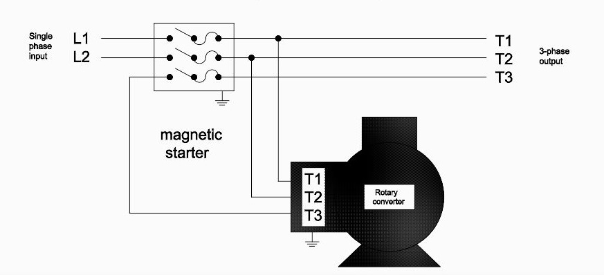
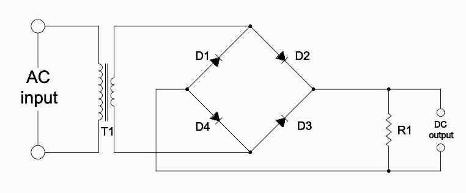

<h1 style="padding-left:4%;padding-top: 2%;padding-bottom: 2%;padding-right: 10%;border-bottom: 1px solid #BDBDBD;">


Rotary Converter and Full-Wave Bridge Rectifier 


</h1>

Autocad 2D


<h2><u>Rotary Converter</u></h2>



<h2><u>Full-Wave Bridge Rectifier</u></h2>


